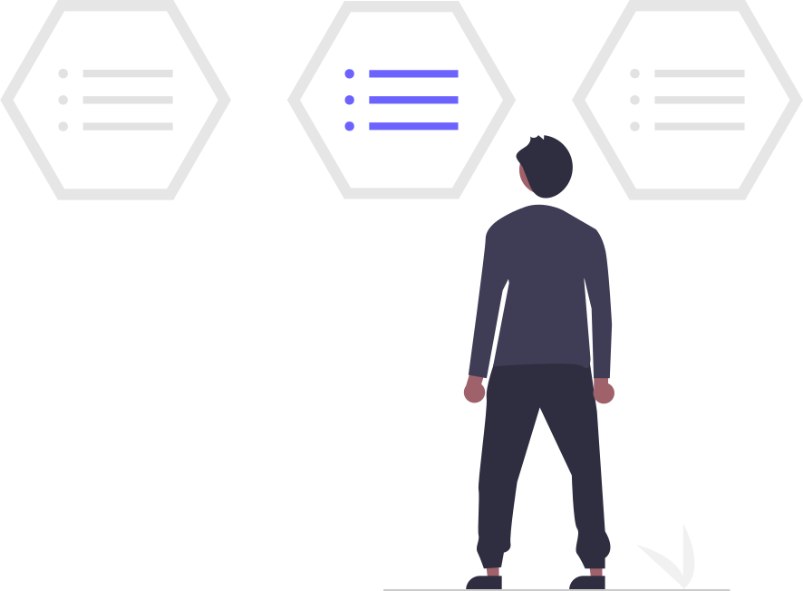

para que servem os menus em sites?
com minhas própias palavras eu digo, além de serem interativos e agradaveis visualmente, eles são uma parte importante de um site, onde ficarão conteudos para troca de tela em relação a um determinado tema ou assunto seja ele qual for. ele serve basicamente e intencionalmente propositalmente para a acessibilidade de um usuario permitindo que ele acesse diferentes conteudos sem ocupar sempre toda a estrutura.